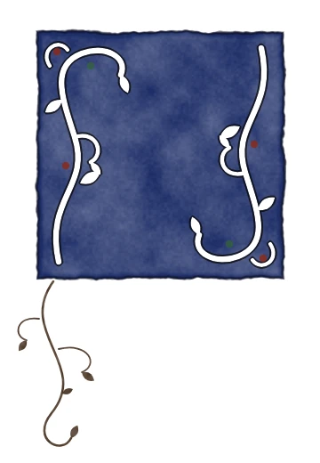
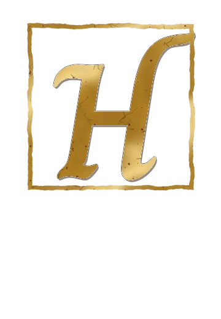

lunes 16 de noviembre
Cobrás enlun 7 dic
21días
Para gastar hasta el cobro$ 12.226


oy podés gastar
$967
Esta semana te quedan $ 3.387 hasta el mié 18 nov · hoy gastaste $ 50
hoy
mar
mié
En la ronda 2 sigue acá el resto de Hoy:
Tenés y Guardás, Tus semanas, la nota al margen…